Product Project · Fall 2026
Ioniq 9 Interior: Process Log
Timeline
- Oct 19 · Afternoon to evening Built the curved infotainment screen with a Simple Deform modifier, working through navigation, modifier and bending problems.
- Oct 19 · Late night Reworked the scale of the whole interior (wheel, seats, floor) and centered the layout on the car's centerline.
- Oct 20 · Morning Started remaking the steering wheel from scratch and smoothed it with Subdivision Surface and Bevel modifiers.
- Oct 20 · Late morning Added the four hub lights with an emission material, picked wheel colors, and placed the new wheel.
- Oct 20 · Midday Applied the two-tone color palette from my reference board, built the center console, and set up lighting.
- Oct 20 · Afternoon Made micro adjustments, worked out the screen proportions on paper, started reworking the pillars, learned Dissolve vs. Delete edges, and measured angles with the protractor.
- Oct 20 · Late afternoon Set up the driver-eye camera, fixed the HDRI sky, added the hazard button, and rendered the final driver's view.
Project overview
I'm modeling a car interior in Blender inspired by the Hyundai Ioniq 9, focused on the driver area: dashboard, curved dual-screen infotainment, steering wheel, seats and center console. I'm building it to real-world scale (meters) using the Ioniq 9's actual interior measurements as reference.
Session 1 — Oct 19
This session I built the curved infotainment screen and then reworked the scale of the whole interior so it matched a real Ioniq 9.
Planning the curved screen
The Ioniq 9 has a panoramic display that curves toward the driver. My plan was to start with a stretched cube and bend it with a Simple Deform modifier set to Bend at 18.6°, based on an estimated curve radius of about 2,000 mm.
Fixing viewport navigation
Before getting far, zooming and panning kept becoming extremely slow in certain spots. I learned Blender zooms toward an invisible pivot point, so the closer you get to it the smaller each step becomes. I turned on Auto Depth and Zoom to Mouse Position in Preferences, which sets the pivot to whatever is under the cursor.
Wrong modifier
I couldn't find the Bend option and realized I had added Surface Deform instead of Simple Deform, since they sit next to each other in the menu. I deleted it and added the correct one.
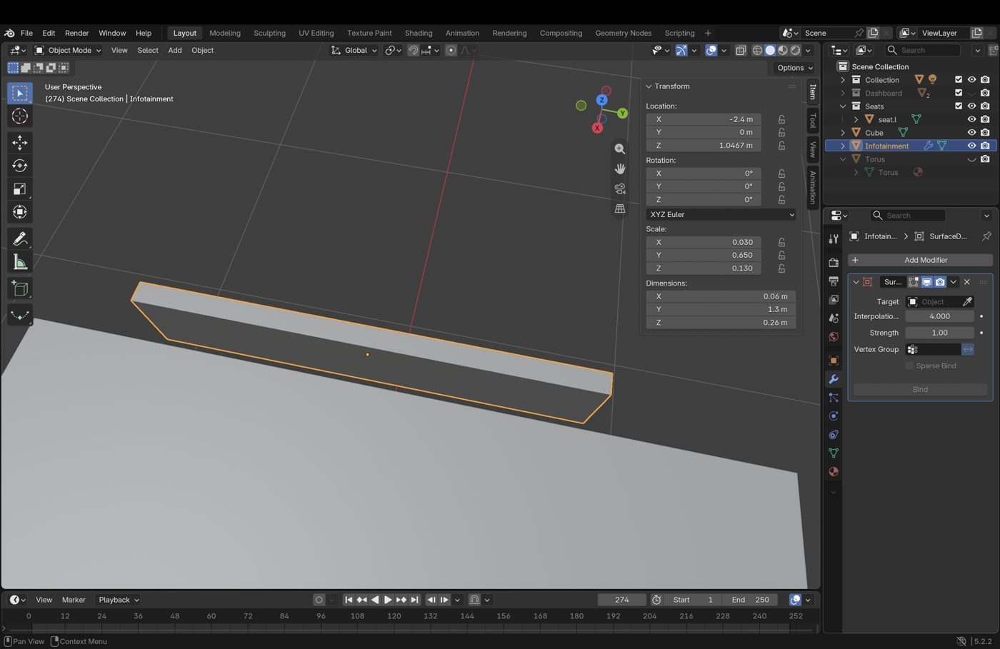
Getting the bend to work
The first bend only tilted the ends instead of curving the panel. There were two causes: the box had no geometry along its length, just 8 corners, and its scale was non-uniform and unapplied. I applied the scale with Ctrl+A and added about 30 loop cuts along the length. After an undo left the mesh with uneven cuts and messy diagonals, I reset it with Limited Dissolve and redid the cuts evenly.
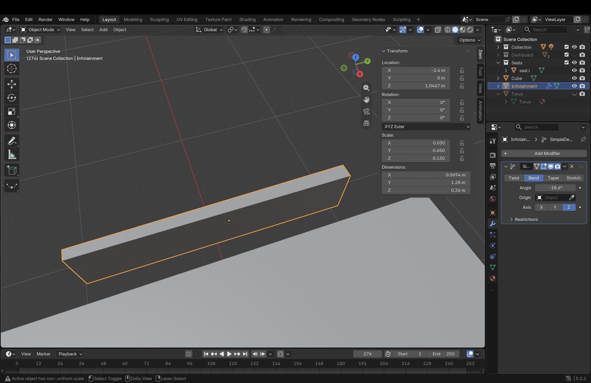
Solving the bowtie shape
The bend then came out as a pinched, twisted bowtie. I learned that Simple Deform bends along the object's local X axis, but my panel was long in Y. I rotated the mesh 90° in Edit Mode, then rotated the object back –90° in Object Mode. Modifiers work in the object's local space before rotation and scale are applied, so this gave the bend the right direction while keeping the panel in place.
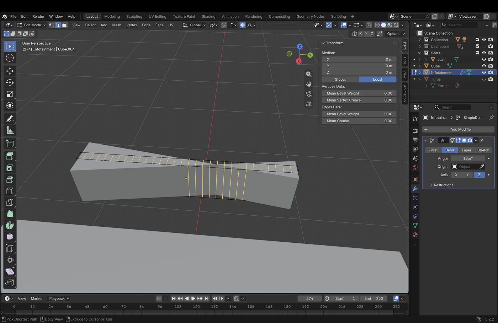
Making two screens
Instead of two separate objects, I kept one curved panel as the housing and inset two recessed screens into its front face, leaving a divider in the middle, so both follow the curve automatically. At first the whole panel shared one material. I fixed that by renaming it Housing (dark matte), adding a second Screens material (near-black, roughness 0.1), and assigning it only to the screen faces.
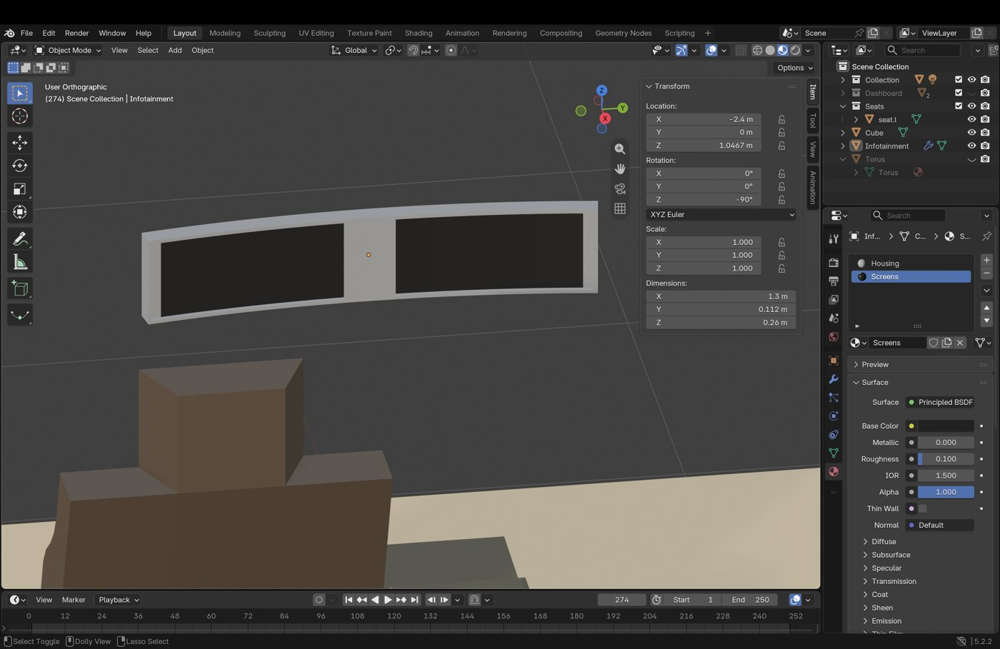
Checking real-world scale
Next I compared everything to real measurements, using the Measure tool and an Empty placed where the driver's eyes would be. The steering wheel was 0.67 m across, almost twice a real wheel, so I scaled it to 0.37 m.
Finding the real scale problem
When I tried to position the wheel, it looked far too low. Looking from the side showed the actual problem: the seat was about 1.5× too big, which made a normal-size wheel look tiny. The floor was also 3.4 m wide, while the Ioniq 9's interior is about 1.56 m door to door (CarExpert). The dashboard had been built to match that oversized floor. I narrowed the floor, resized the seats to 0.55 m wide, and spaced them to leave about 0.3 m for a center console.
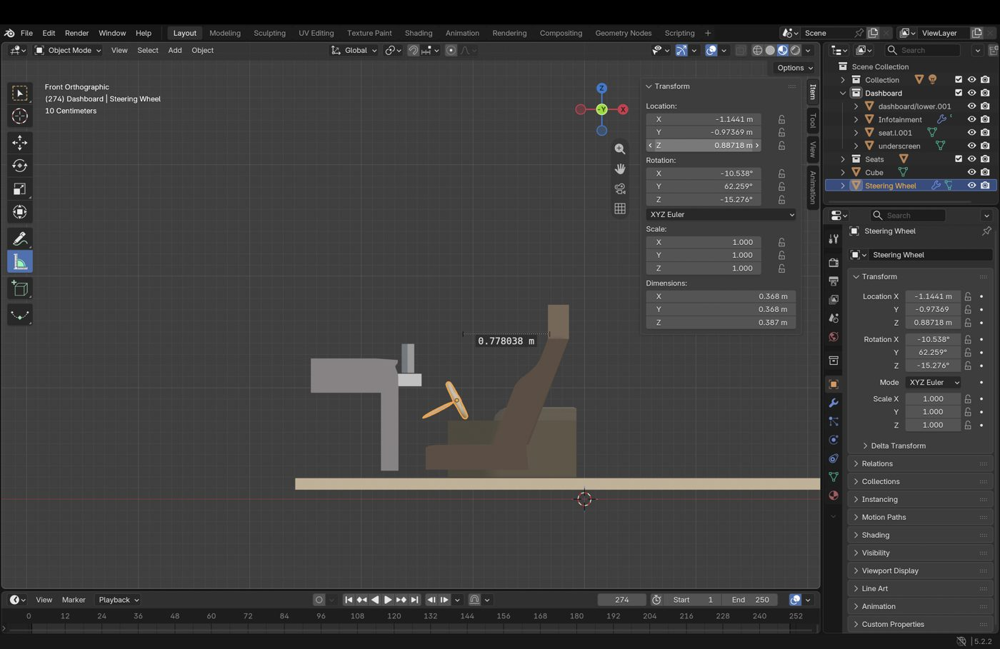
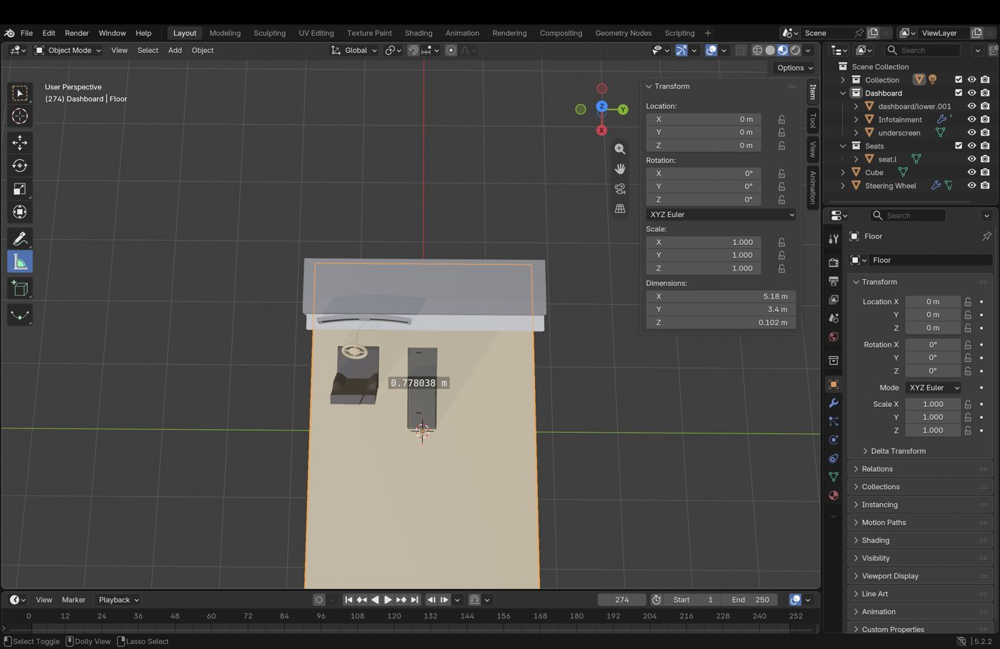
Centering the layout
I moved the whole scene so the car's centerline sits on Y = 0. That puts the console at 0 and the seats at –0.43 and +0.43, which makes positions easy to reason about. Along the way I learned an object's Location shows its origin point, not its visible geometry. That explained why some dashboard pieces read Y = 0 while visibly sitting off-center.
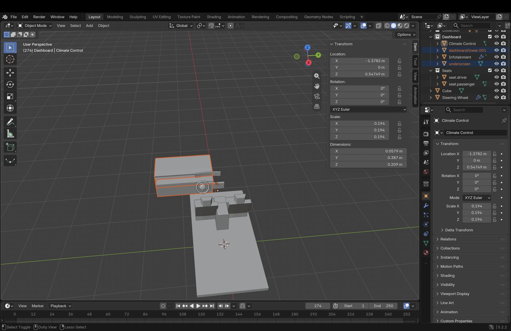
End of session
Reviewing the scene, I noticed the seats sat too close to the dashboard for any legroom, the infotainment stuck out past the dashboard, and the steering wheel was pressed into the dash. I left these to address next session.
Session 2 — Oct 20
This session I started remaking the steering wheel from scratch.
Why I'm remaking it
I really didn't like how the steering wheel we had in class fit, and I didn't know exactly how to change it enough without just remaking it. So I decided to build a new, more accurate one.
Building the base shapes
I started with a torus for the rim, a cube for the center hub, and two spokes connecting the hub to the rim.
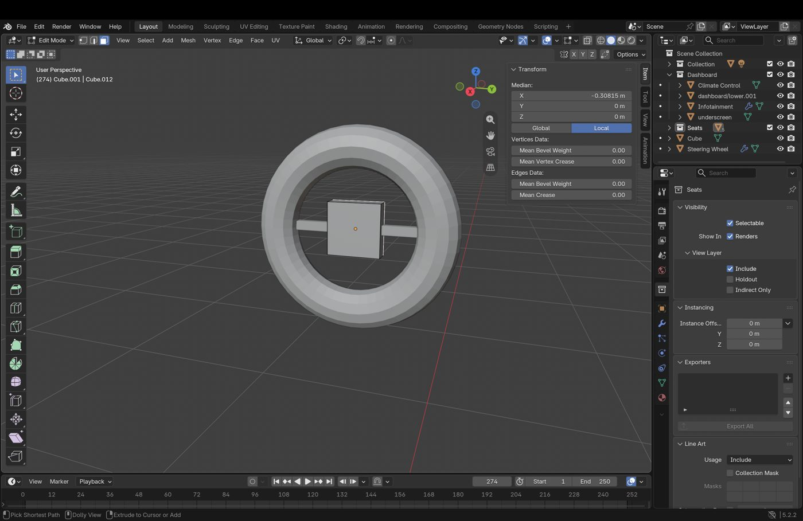
Thinning the rim
The torus rim was much thicker than a real steering wheel grip. Scaling the whole torus would have shrunk the ring too, so I used Shrink/Fatten (Option+S) on just the rim, which thins the tube without changing the wheel's overall size. My targets are a rim about 3–3.5 cm thick and an overall diameter of about 0.37 m.
Organizing the parts
I put all the wheel pieces in their own Steering Wheel collection and named each part (swheel.center, swheel.l.bar, swheel.r.bar, swheel.top.bar and swheel.wheel) so they're easy to find and select.
Refining the shape
With the basic form in place, the wheel still looked blocky. The center piece was a flat box and the rim looked faceted. My next step was to give the center piece a slight curve and smooth out the circular rim.
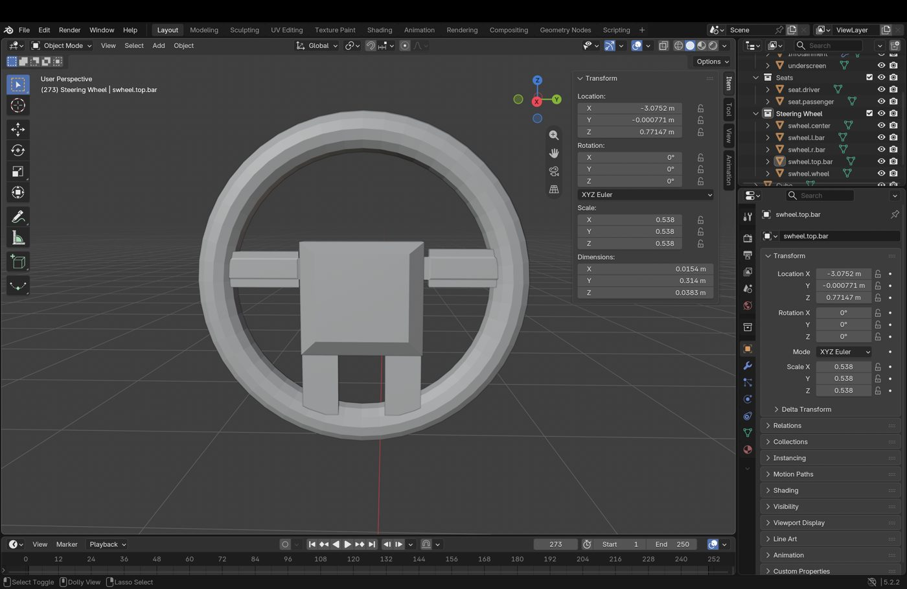
Using a reference photo
I pulled up a photo of the real Ioniq 9 steering wheel to guide the center piece. Its hub isn't bent like my screen. It's a soft, rounded square with a slightly puffed-out face, like a pillow. So instead of bending the box, I planned to round off its edges and dome the front face to match that shape.
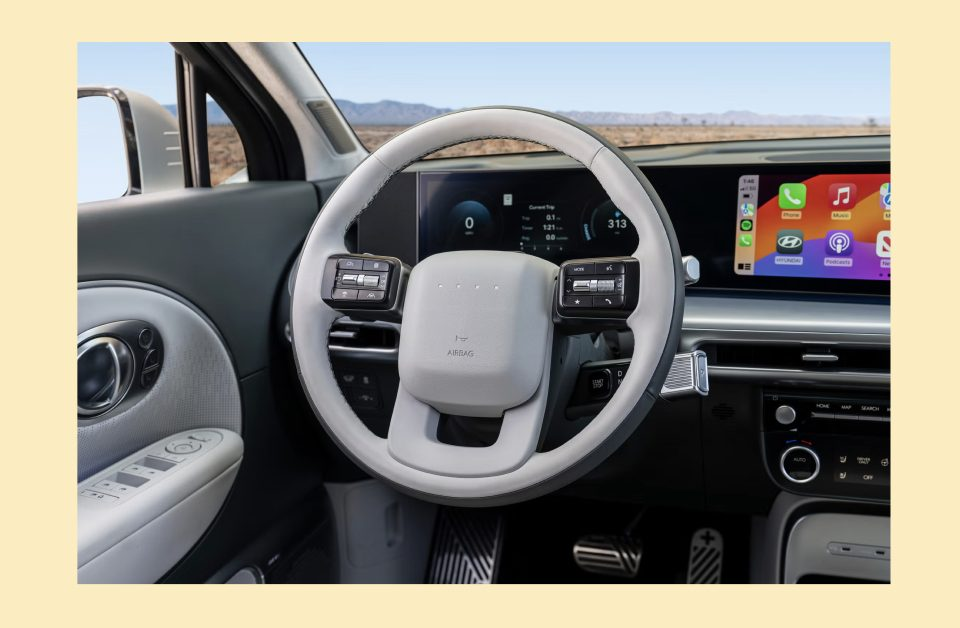
Smoothing the rim and rounding the hub
I added a Subdivision Surface modifier and Shade Smooth to the rim, which got rid of the blocky segments and made it a clean, round ring. On the center piece I added a Bevel modifier above a Subdivision Surface, which is the setup for a rounded-square shape rather than a blob. The hub's outer edges still looked too sharp, so smoothing those was next.
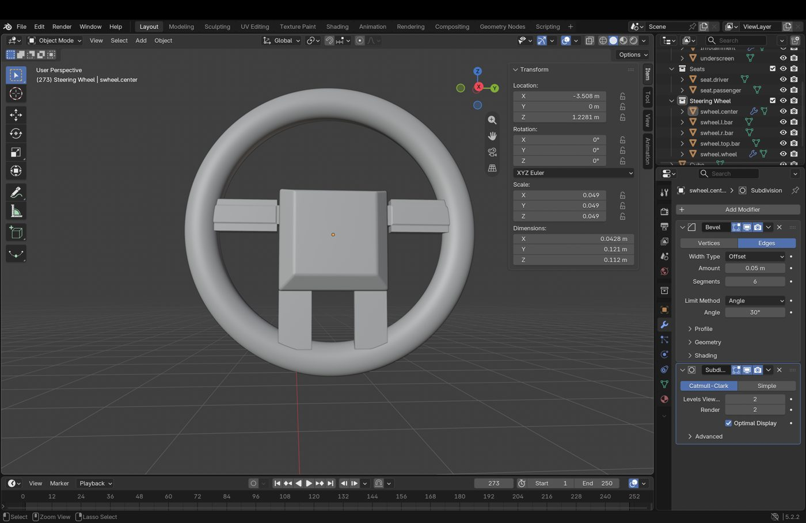
Adding the four hub lights
The real Ioniq 9 wheel has four small dots across the center of the hub. I wanted them to look lit up without adding actual light objects, so I decided to fake the glow with an emission material instead.
Choosing the wheel color
For the materials I went back to the reference photo. The real wheel is a light gray leather with a darker charcoal band on the outer edge of the rim, and black button pods on the spokes, so I based my colors on that.
Placing the new wheel
Once the new steering wheel was finished, I aligned it with the front of the dashboard and deleted the old one from class. Then I started recoloring the tactile button areas on the side bars that come out from the center of the wheel.
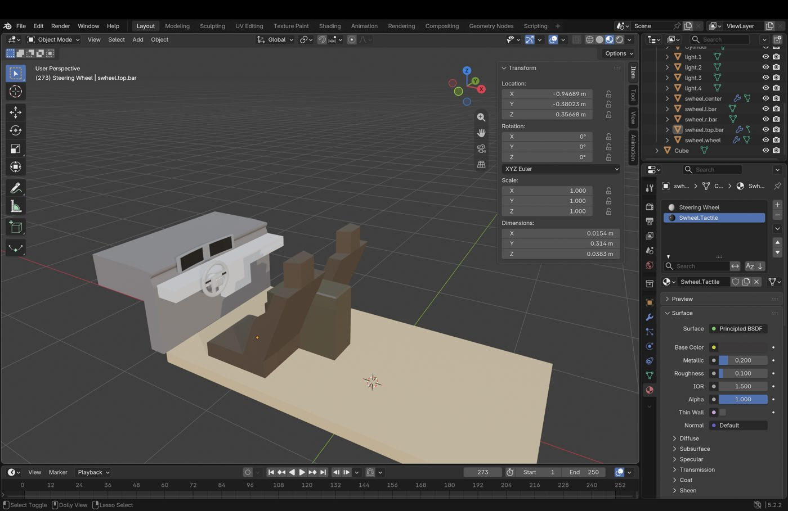
Plan after lunch
Before taking a break, I planned my next step: working on the center dash underneath the infotainment screen and getting it at least correct enough. I also wanted feedback on the colors of the whole interior.
Reviewing interior colors against my reference board
I compared my scene to the front-interior photos on my reference board. The real Ioniq 9 uses a two-tone scheme: light gray on the lower dash, doors, seat cushions and console, with darker charcoal on the upper dash, seat backs and the outer edge of the wheel. The carpet is near-black, with satin silver trim and soft green ambient lighting as accents. My scene still had placeholder colors, brown seats and a beige floor, so I planned to switch everything over to this palette.
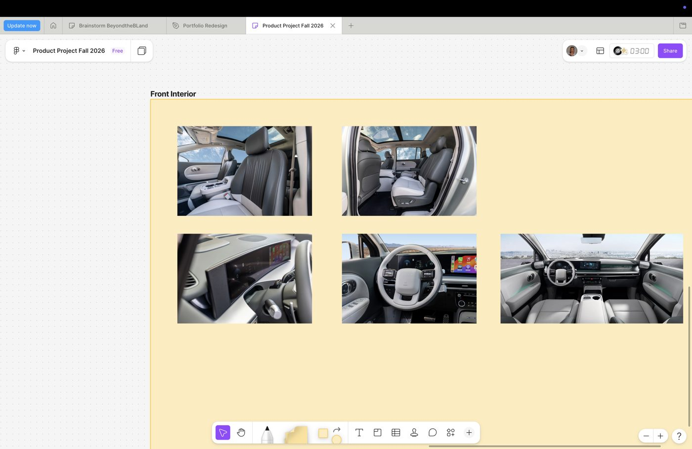
Center console colors
Next I looked at the center area between the seats. In the reference photos the console body is light gray, with a padded light gray armrest at the back and a glossy black top panel at the front that holds the cupholders and charging area. A thin silver accent outlines the edge. I planned to split my console into those zones and color each one to match.
Applying the new palette
I switched the scene over to the reference colors: a charcoal dashboard, light gray seats, a near-black floor, and a thin mint ambient light strip along the dash. I added a Sun light to light the scene and built a 0.7 m × 0.3 m × 0.6 m center console between the seats with a Bevel modifier on its edges. Viewing it in Rendered mode, the interior finally started to look like the Ioniq 9.
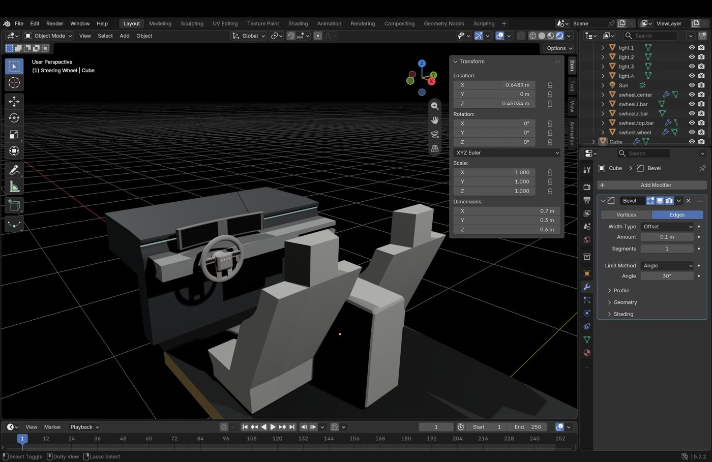
Lighting the scene
To make the render read like daylight, I set the Sun's strength in the 3–5 range and softened its shadows with a larger angle. I also gave the World background a light color so shadowed areas, like the dark dash, weren't pitch black.
Micro adjustments
With the main pieces and colors in place, I moved on to small refinements across the scene: fine-tuning the steering wheel, the infotainment screens and the seating so their positions, sizes and details matched the reference more closely.
Figuring out the correct screen proportions
Before refining the infotainment further, I worked out its proportions on paper so it would fit better into the scene and not leave long-lasting odd dimensions that would create cascading effects on everything built around it. I based the outer glass on about 650 mm × 130 mm, a 5:1 ratio, with a curve radius of about 2,000 mm, which works out to an 18.6° bend and roughly 27 mm of sag at the peak. To keep the layout consistent, I divided the total width into 18 grid blocks: about 0.73 blocks (26.5 mm) for each outer edge, 8.1 blocks (292.5 mm) for each screen, and 0.33 blocks (12 mm) for the gap between the driver display and the infotainment screen, with a total height of about 3.5 blocks. I also noted the screen thickness, estimated at 30–50 mm, as something I still need to actually measure.
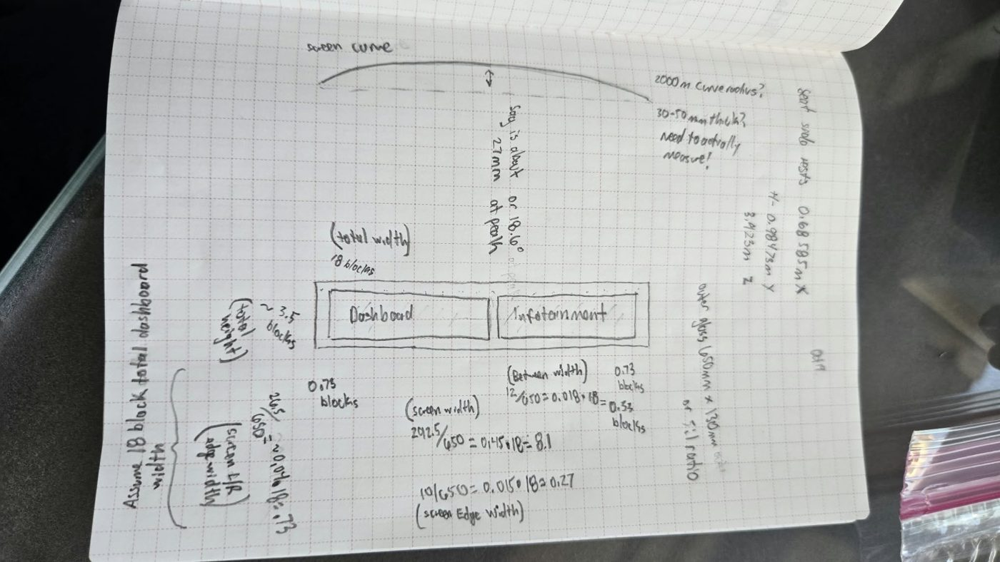
Adding the pillars
Up to this point the interior looked like furniture sitting on a floor. To give it a more realistic look, I started modeling the pillars, the posts that frame the windshield and doors, so the cabin reads as an enclosed space.
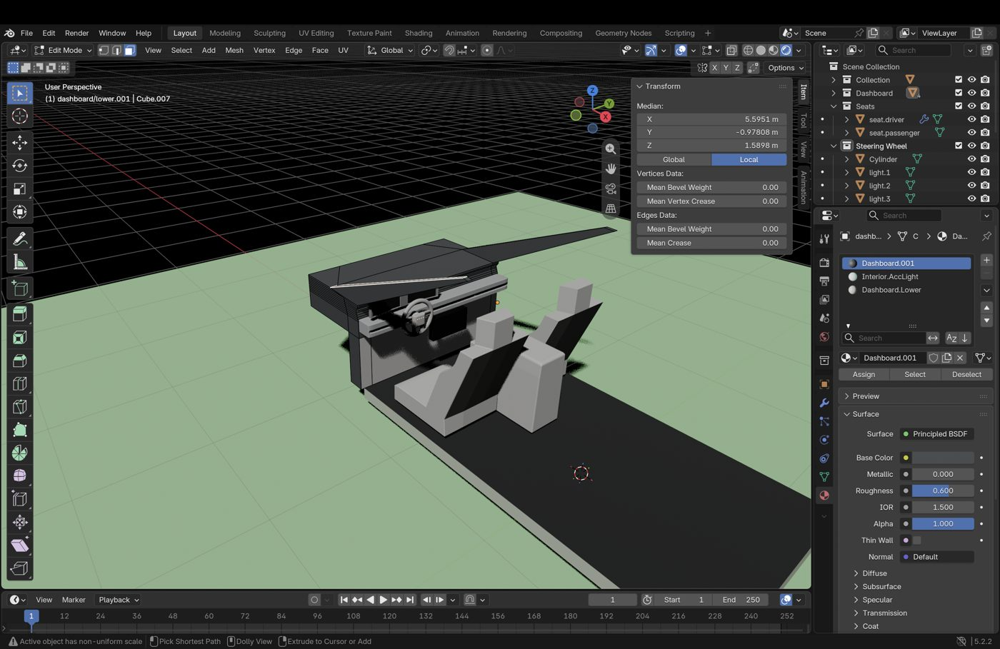
Reworking the pillars
My first pillars came out as tall, thick, vertical blocks that looked like obelisks blocking the view. Real A-pillars are slim, lean back to follow the windshield, and taper toward the roof. I planned to rebuild them as their own objects, angled back from the dashboard corners, with a slight taper and a bevel, then mirror them across the centerline so both sides match. The scene was also rendering very dark, so I looked into the lighting setup at the same time.
Dissolve vs. Delete edges
While cleaning up geometry, I finally understood the difference between Dissolve Edges and Delete Edges. I had been struggling with removing extra edges and loop cuts: every time I deleted them, the faces around them disappeared too and left holes in my mesh. What I was looking for was a way to remove the edges but keep the surface solid. Delete Edges removes the edges and every face connected to them, leaving a hole. Dissolve Edges removes the edges but merges the faces on either side into one, so the surface stays closed. Now I use Dissolve whenever I want to simplify geometry and Delete only when I actually want to cut a part away.
Measuring the pillar angle with a protractor
Since I had slanted the pillar by moving its top face, Blender never recorded an angle. I learned the Measure tool can easily be converted into a protractor: dragging from the middle of a ruler adds a third point, and Blender shows the angle at that corner. My first reading came out as exactly 90° because I had put the corner where a horizontal and a vertical reference line met, instead of at the base of the pillar. Comparing the pillar's rise to its length showed it was leaning about 19° from horizontal, much flatter than a real windshield, so I needed to pull its top forward.
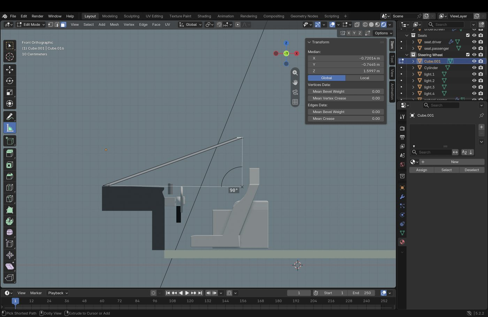
Correcting the pillar angle
I kept the pillar's base on the dashboard and pulled its top face forward. It now rises at about 31° from horizontal and ends roughly above the steering wheel, which matches the rake of a real SUV windshield much better than the flat first version.
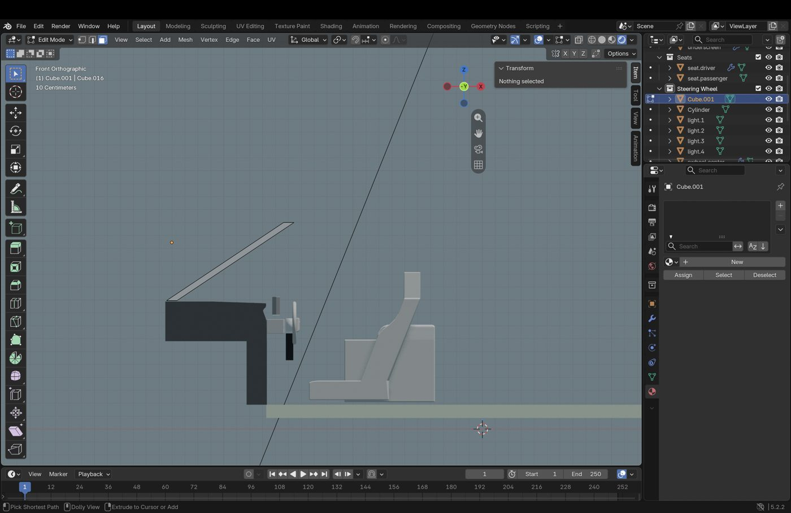
Softening the pillar
With the angle right, the pillar still looked sharp and jagged: a flat slab with hard edges and an abrupt joint where it met the dashboard. It was also using the steering wheel's light gray material by accident. I planned to round its edges with the same Bevel and smooth-shading approach I used on the wheel, sink its base slightly into the dashboard to hide the joint, and switch it to the charcoal dashboard material.
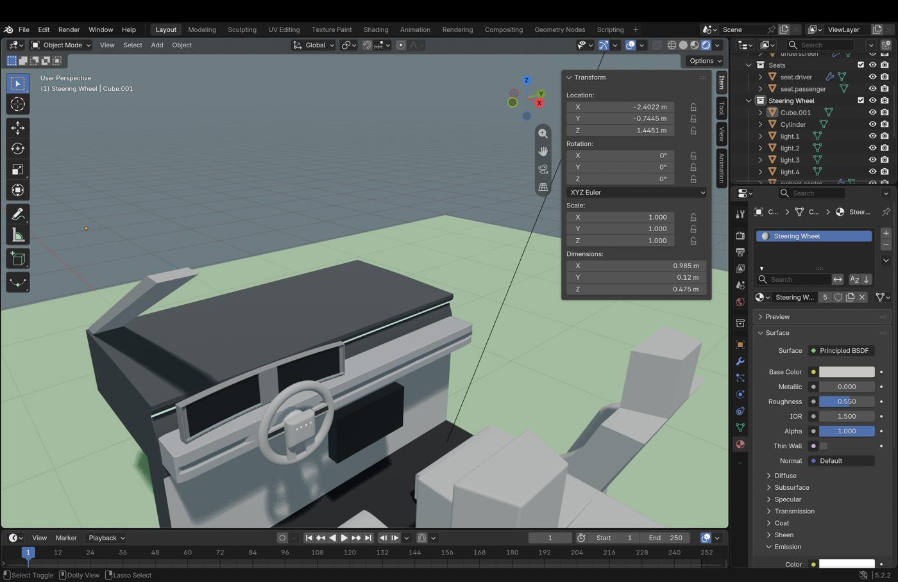
Choosing a flat front over a curve
I tried curving the front edge of the dashboard, but the result looked uneven and was hard to control. I decided to go back to the flat front. Looking at my reference again, the Ioniq 9's dashboard is built from clean, horizontal, layered shapes, so a flat front with slightly softened edges actually matches the real design better, and it keeps the geometry simple for everything I still need to attach to it.
Framing the windshield
I built both A-pillars and joined them with a header bar across the top, which made a full windshield frame. Seeing it from behind the seats, the top of the frame looked close to the height of the headrests, so I checked whether the roof line was too low. The Ioniq 9 has about 1,003 mm of front headroom from the seat cushion to the headliner (CarExpert), which puts the roof roughly 1.3–1.4 m above the floor and well above the headrests.
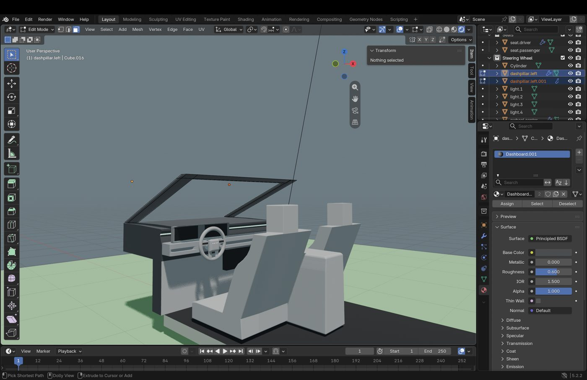
Deciding what level of accuracy matters
Since this project is about testing the infotainment experience, not designing the whole cabin, I decided the roof line was close enough and didn't need to be perfect. The parts that really affect the infotainment are the driver's eye position, the distance and angle to the screens, and whether the steering wheel blocks any of the display. I chose to focus my accuracy there and treat the pillars and roof as context that frames the scene.
Checking the driver's view with a camera
To test the infotainment the way a driver would see it, I placed a camera at the driver's eye position and looked through it. The first view showed two problems: the camera was looking almost straight ahead, so the frame was filled with windshield and the screens sat below it, and the 50 mm lens was too zoomed in to show the wheel and both screens together. It also showed something useful for the design itself: from the driver's seat, the steering wheel rim and hub cover the lower part of the driver display, so the most important information needs to sit in the upper part of that screen.
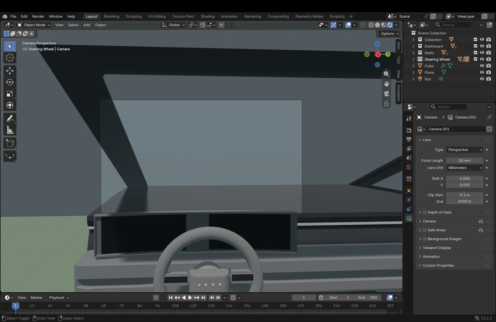
Adding an HDRI sky
To get more realistic lighting and a real sky outside the windshield, I loaded a winter evening HDRI into the World. Instead of showing a sky, it turned the whole scene a flat pinkish orange. The problem was that I had connected it through an Image Texture node, which is meant for wrapping images onto objects and has no idea how to wrap around the scene. Switching to an Environment Texture node maps the image as a full surrounding sky, so it shows up properly and lights the scene from the right directions.
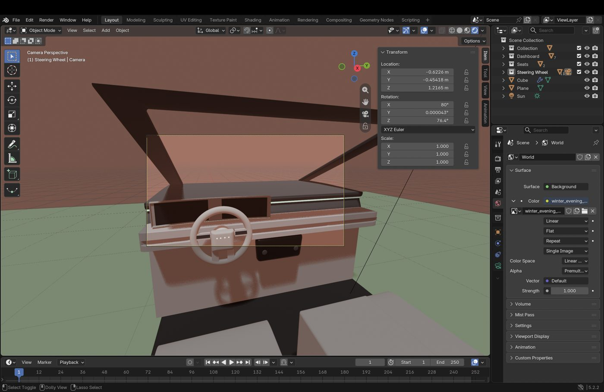
Adding a hazard button
To make the console easier to read at a glance, I added a simple hazard light button: a small rounded square with a red triangle outline. I made the triangle from a 3-vertex circle, inset it and deleted the middle face to leave just the outline, and gave it a red emission material so it reads as a lit symbol without adding a real light.
Final result
For the final render, I switched the World to an urban street HDRI, this time loaded through an Environment Texture node so it wraps around the car as a real surrounding street. I rendered the scene from the driver-eye camera, which shows the interior the way it would actually be experienced: the curved dual screens framed by the windshield, the steering wheel with its four glowing hub lights, the mint ambient strip along the dash, and the red hazard button on the center stack.
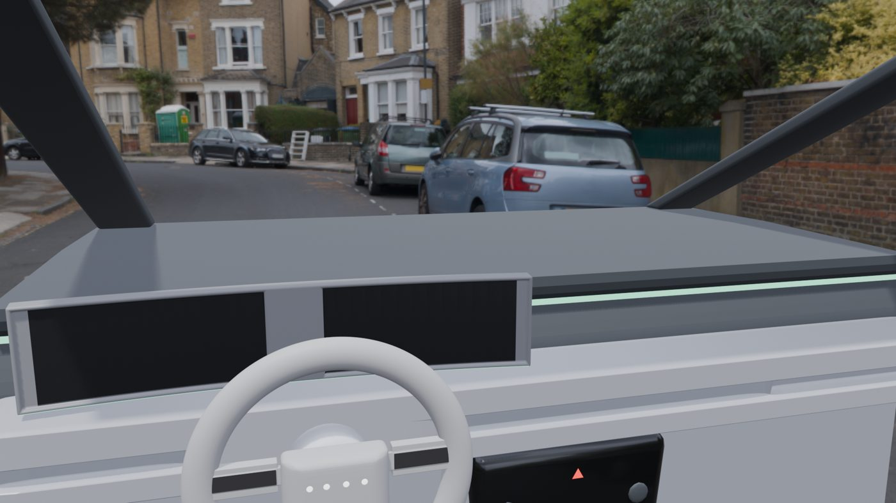
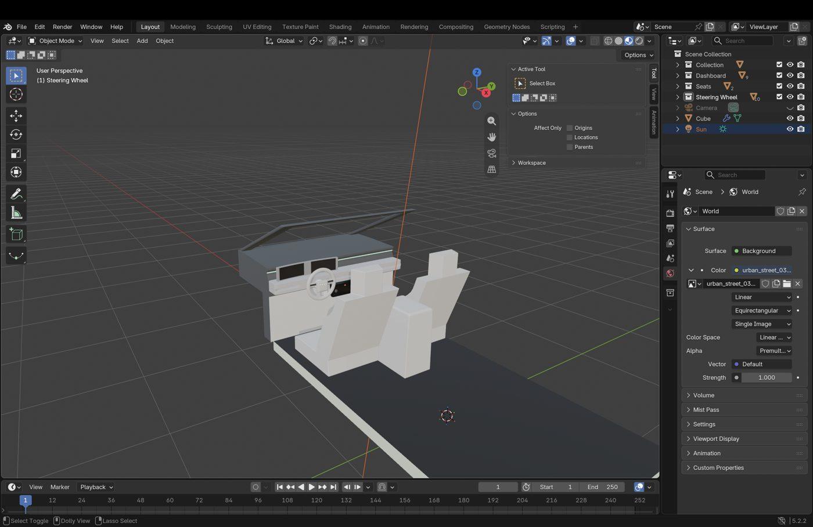
Wrapping up
Over two sessions, this went from loose blocks sitting on an oversized floor to a to-scale driver's view I can use to test the infotainment. The biggest lessons weren't individual tools so much as a way of working: checking against real measurements early so mistakes don't cascade, going back to the reference whenever something looked off, choosing the simpler option when it fit the design better, and putting my accuracy where the project actually needs it, which is the driver's view of the screens. Next, I want to design the actual interface content for the screens and test how readable it is from this camera.
Key things I learned
These were the five biggest new skills from this project so far.
- Simple Deform modifier for smooth curves. Bending a shape with Simple Deform (Bend mode) gave my infotainment screen a smooth, even curve. I learned it needs enough loop cuts to bend smoothly, and that it bends along the object's local X axis, which is why my first attempts twisted instead of curving.
- Bevel and Subdivision Surface modifiers for smoothing the steering wheel. Subdivision Surface turned the blocky rim into a clean, round ring. Stacking a Bevel above a Subdivision Surface turned the boxy hub into a soft, rounded square instead of a blob. I also learned modifiers work before an object's scale, so applying scale (Ctrl+A) is important for them to look right.
- Emission materials for glow without a light. For the four lights on the hub, I used an emission material instead of real light objects. Setting an emission color and strength makes a surface glow on its own, which mimics a lit indicator while keeping the scene simple.
- Dissolve Edges vs. Delete Edges. Delete Edges removes the edges along with every face touching them, which leaves holes. Dissolve Edges removes the edges but merges the surrounding faces, so the surface stays solid. This solved the problem I kept running into when removing loop cuts.
- Turning the Measure tool into a protractor. Dragging from the middle of a ruler converts it into a protractor that measures the angle at that point. The corner has to sit where the two lines I'm comparing actually meet, or the reading is meaningless.